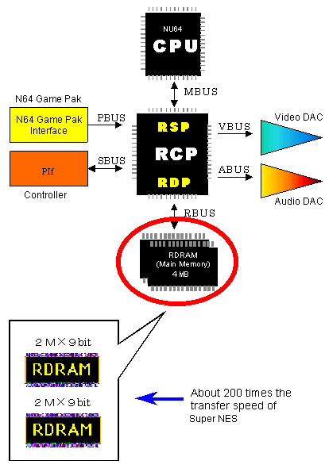
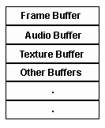

1.2.4 RDRAM (N64 Main Memory)
RDRAM is the N64 main memory. It provides a total of 4 megabytes by 9 bits of memory in two chips of 2 megabytes each. The CPU and the RCP processing chips share all available RDRAM as shown in the following illustration:

Features of RDRAM
- It provides 4 megabytes by 9 bits of space. (The 9th bit is used for anti-aliasing and Z-buffering.)
- It consists of several banks in units of 1 megabyte by 9 bits. Each bank has separate active page registers.
- The system clock operates at 250 MHz.
- It can provide high-speed data transfer of 500 megabytes per second to read or write consecutive data per the RamBUS standard. (Note, however, that this high speed is not attainable for random access.)
- The transfer speed is about 200 times that of Super NES.
- It can be used simultaneously by the CPU, RSP, RDP, and the RCP I/O interfaces.
RDRAM Block Definition
As a game developer, you can map RDRAM as appropriate for each game application. Usually the following buffers and areas are specified in RDRAM:
- Audio buffer
- Frame buffer
- Z-buffer
- Vertex buffer
- Texture buffer
- Audio command list buffer
- Display list buffer
- Program area
- Other data areas

Nintendo® Confidential
Copyright © 1999
Nintendo of America Inc. All Rights Reserved
Nintendo and N64 are registered trademarks of Nintendo
Last Updated March, 1999